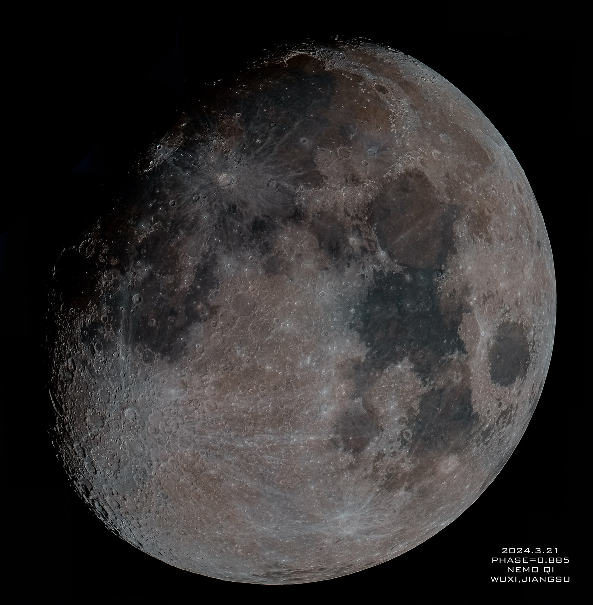

B.Eng. candidate in Intelligent Sensing Engineering.

PERSONAL BLOG / HOLO LAB / NIGHT-SKY LOG
Nemo Qi
I build Holo, study AI systems and quantitative research, and spend clear nights with equatorial mounts, optics, deep-sky targets, and planetary detail.
Command 'apt' not found, but can be installed with:
sudo apt install aptDeadlock joke: process A waits for apt, apt waits for apt install apt, and the package manager politely refuses to be born.
Holo runtime work, ProjectH quantitative research, sensing and control software.
Public contact surface for project notes and collaboration.
ABOUT
Systems, instruments, and first-principles taste.
My main engineering project is Holo: a personal AI runtime where cognition, transport boundaries, memory, active threads, and online canary surfaces are treated as inspectable system contracts.
I am interested in mathematical and physical reasoning. Fermi and Feynman are useful reference points for taste: estimate from fundamentals, explain plainly, and distrust vague authority until the model touches reality.
Resume-side work includes Flutter-based pump controller development, Ubuntu industrial-controller communication tests, and systematic market-data research workflows.
PROJECTS
Work that should be legible from the outside.
Primary project
Public repo
Holo
Personal AI runtime and operating surface. The important part is not a chat skin; it is boundary discipline across cognition, memory, transport, watcher behavior, and staged runtime evolution.
Open Holo repository
Research system
Private repo
ProjectH
Quantitative research infrastructure for medium- and low-frequency market workflows: walk-forward rigor, real trading constraints, model comparison, and production-grade truth chains.
GitHub profile
Measurement
Public repo
laser_extraction
Laser extraction and measurement tooling. It stays here as a technical side project, not the identity of the homepage.
View repositoryASTRONOMY
Observing is engineering with the sky as the bench.
Astronomy is not decoration for me. I am familiar with EQ6 equatorial mounts, Schmidt-Cassegrain telescopes, large Newtonian reflectors, and the different patience required by deep-sky imaging and planetary capture.
GALLERY
Visual field notes
Rebuilt visual notes use local generated studies until the original painting photos are supplied again. The layout stays compact, even when zoomed.
MOVIES
Favourite movies
Custom same-size title cards avoid embedding copyrighted poster sources while keeping this as a separate personal shelf.
BLOG
Notes to publish next.
Runtime boundaries
How memory, transport, and active-thread logic should stay inspectable.
Walk-forward research
Why trading experiments need truth chains before they need larger models.
Field logs
Polar alignment, EQ6 habits, deep-sky patience, and planetary capture notes.
CONTACT